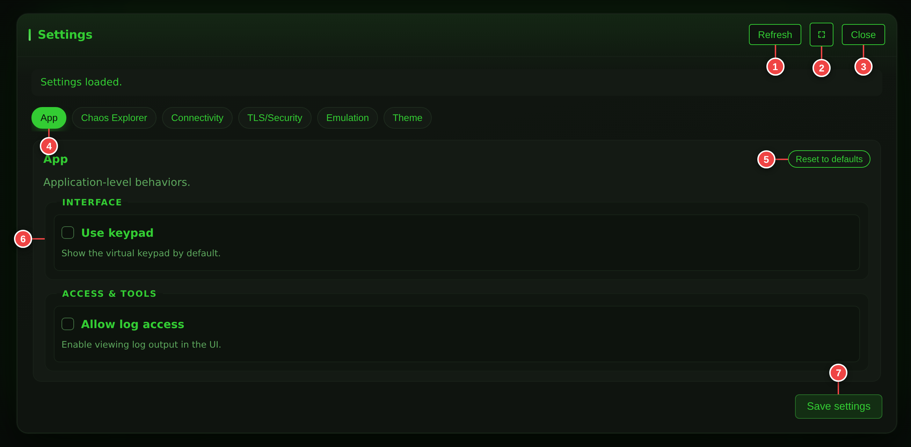

Connect and Use 3270Web¶
This page explains connection setup and the full Settings modal from a user perspective.
Connect to a Host¶
A first connection, end to end, in half a minute:
You can connect to:
hostname:port(example:mainframe.example.com:23)IPv4:port(example:10.0.0.5:23)IPv6:port(example:[::1]:23)sampleapp:<id>for bundled sample targets
If autoconnect is enabled, 3270Web will connect automatically on startup.
Open Settings¶
- Open Settings from the account and settings menu at the right-hand end of the menu bar.
- Use tabs to switch sections.
- Edit values.
- Click Save settings.
- If prompted, restart 3270Web to apply startup-level changes.
You can also use:
- Refresh to reload current values
- Reset to defaults inside each settings section
- Maximize for easier editing of long values
Menu Bar Callouts¶

- Session — profiles, connection details, reconnect, print, disconnect
- Terminal — find, copy, screen history, file transfer, keyboard mapping
- View — focus mode, hotspots, virtual keypad, terminal size, theme
- Automation — recording, playback and chaos exploration
- Tasks — run a guided business task
- AI chat — show or hide the AI side panel
- Command palette — search every action (Ctrl+K)
- Account and settings — settings, logs, workspace mode, about, sign out
- Collapse — fold the bar away for a distraction-free terminal
Business mode is the default
The screenshot above is Engineering mode, which is why callout 4 is visible. In Business mode — what you get on a fresh browser — the Automation menu is hidden and the bar carries only what an application user needs. Engineering tools in menu 8 switches between them, and the choice persists per browser. See Keyboard and Controls for the full breakdown.
Settings Modal Callouts¶

- Refresh values
- Maximize/restore modal
- Close settings
- Section tabs
- Reset section to defaults
- Active section content
- Save settings
Settings Sections (Full)¶
The modal has six tabs: App, Chaos Explorer, Connectivity, TLS/Security, Emulation, and Theme.
Connectivity¶
Controls how 3270Web reaches the host.
Includes:
- Port, connect timeout
- IPv4/IPv6 preference
- Proxy settings
- callback/script port and socket options
Use this section when you need alternate network routing or script protocol listeners.
TLS/Security¶
Controls TLS certificate and protocol behavior.
Includes:
- Certificate verification toggle
- Min/max TLS protocol
- Client certificate and key files
- CA file/directory/chain
- Accepted hostname and client certificate name
Use this when connecting to secured hosts with custom certificate requirements.
Emulation¶
Controls terminal identity and data representation.
Includes:
- Terminal model (
3278/3279variants) - Host code page
- Terminal/device/user identity options
- NVT mode and oversize behavior
This section directly affects screen size, field positions, and recording reliability.
App¶
Controls application-level UI features.
Includes:
Allow log accessUse keypad(show virtual keypad by default)- Terminal Font dropdown — pick from the three bundled IBM 3270-style fonts (Regular, Semi-Condensed, Condensed). See Terminal Fonts for usage notes.
Use this section to control log visibility and default keyboard UI behavior.
Theme¶
Controls the look of the terminal and surrounding UI.
Includes:
- Theme — eleven built-in themes plus any custom themes you define: Yorkshire Mainframe Terminal (default), Authentic 3270, Amber Phosphor, Midnight Cyan, Paper Terminal, Neon Grid, and Ocean Ops, followed by the four palettes shared with the project site and the documentation sites — 3270.io Phosphor Green, 3270.io Amber CRT, 3270.io Ice and 3270.io Daylight. Picking one of those four gives the terminal the same colours as the GRN / AMB / ICE / DAY control on those sites.
- Terminal Font — the three bundled IBM 3270-style fonts
- A custom theme editor for authoring your own palette
Themes can also be switched straight from the command palette without opening Settings.
Chaos¶
Controls chaos exploration defaults.
Includes:
CHAOS_MAX_STEPSCHAOS_TIME_BUDGET_SECCHAOS_STEP_DELAY_SECCHAOS_SEEDCHAOS_MAX_FIELD_LENGTHCHAOS_FORCE_OVERRIDE_EXISTING_INPUTS— overwrite prefilled input fields more aggressively to maximise exploration.CHAOS_SCREEN_DEDUP_SIMILARITY(default0.95) — similarity threshold for merging near-duplicate screens in the discovery map. Higher is stricter.CHAOS_LEARNED_INPUT_REUSE_BIAS(default1.0) — weight applied to known-good input values when generating new field writes.CHAOS_LEARNED_KEY_REUSE_BIAS(default1.0) — how often the engine retries AID keys that have previously caused a transition versus exploring untried keys.CHAOS_EXPORT_SUCCESS_BALANCE(default1.0) — when exporting the chaos workflow JSON, balances steps drawn from successful transitions against exploratory steps.CHAOS_OUTPUT_FILE— file name for the exported workflow JSON. Written into the chaos runs directory; any directory component is dropped. See the note in Chaos Mode.CHAOS_TRANSITION_LOG_PATH— file name for a JSONL log with one line per attempt, written into the chaos runs directory. See Chaos Mode.CHAOS_EXCLUDE_NO_PROGRESS_EVENTS
Use this section to tune how aggressively chaos mode explores screens and where optional output should be written. See Chaos Mode for a deeper walkthrough of the bias settings.
Settings Not Exposed in the Modal¶
A number of s3270 options are supported by the configuration file and
environment variables but deliberately have no field in the Settings
modal. Set them in webapp/WEB-INF/3270Web-config.xml or as environment
variables before starting 3270Web:
| Purpose | Variables |
|---|---|
| Startup automation | S3270_EXEC_COMMAND, S3270_LOGIN_MACRO, S3270_HTTPD, S3270_MIN_VERSION |
| Diagnostics/tracing | S3270_TRACE, S3270_TRACE_FILE, S3270_TRACE_FILE_SIZE |
| Misc | S3270_XRM, S3270_SET, S3270_CLEAR, S3270_UTF8, S3270_COOKIE_FILE |
Use the tracing variables when troubleshooting host interaction issues, and the startup variables for scripted launch flows.
Opt-in capabilities¶
Four capabilities are off until an environment variable turns them on. Each one either opens a door to something outside this process or writes something that outlives the session, which is why none of them has a checkbox in the Settings modal — turning one on should be a deployment decision, made once, where the rest of the deployment is described.
| Variable | Default | What it enables |
|---|---|---|
API_TOKEN |
unset | The whole of /api/v1. Unset, every route on it answers 503. One shared credential for one operator: with AUTH_MODE=local the instance refuses to start with it set, and clients use a token per account instead |
ALLOW_SAMPLE_APPS |
off | Letting the headless API start a bundled sample app. It is a listener this process opens on your behalf |
ALLOW_SCREEN_TRACE |
off | Screen tracing, which writes every screen the terminal draws to a file on the server — including whatever was typed into a field the host did not mark hidden |
EMBED_ORIGINS |
unset | Framing the terminal in a page on another origin, and calling the API from one. Names the exact origins; there is no wildcard. See Embedding 3270Web |
DATA_DIR |
beside the program | Where accounts, tokens, the audit trail and saved work are written. The Docker image sets /data; see Keeping the state |
PR3287_PATH |
found on the path | Where the pr3287 binary is, for printer sessions. Not a gate — the feature is available wherever the binary is, and reports that it is not where it is missing |
ALLOWED_HOSTS |
unset | Which mainframes this instance may connect to, as comma-separated globs, on every path. Unset means any host the usual validation allows — see Limiting what an instance can reach |
RATE_LIMIT_CONNECT / _CHAOS / _TRANSFER / _AI / _AICONTROL |
20 / 10 / 20 / 60 / 120 | Requests a minute per account on the routes that cost the instance something. 0 turns one off |
AUDIT_LOG_PATH |
audit.log beside the account store |
Where the audit trail is written. It is always on; this only moves it |
TRUST_PROXY_HEADERS |
off | Believing X-Forwarded-Proto, so cookies keep their Secure flag behind a proxy that terminated TLS. Only set it when a proxy really is in front of this server — the header is set by whoever sends the request |
TLS_TERMINATED_UPSTREAM |
off | Asserting that TLS is terminated in front of this server when the edge forwards no headers at all — a tunnel daemon, a sidecar. Applies to every request regardless of headers; see When the sign-in page still says the connection is not encrypted. Prefer TRUST_PROXY_HEADERS where X-Forwarded-Proto does arrive |
ALLOW_LOG_ACCESS is the fifth, and it does have a Settings field — see
Log Access below.
UI Conveniences¶
A few quality-of-life behaviours worth knowing about:
- A collapsible menu bar — the chevron at the right-hand end folds the whole bar away and remembers the choice, so a session that needs the height can have it without leaving anything behind.
- Required hostname input — the connect form marks the hostname field as required and announces missing-value errors to assistive tech, so it is harder to accidentally submit an empty form.
- Saved host deletion confirmation — removing a saved host profile pops a confirmation modal; the destructive action cannot fire on a single mis-click.
- Destructive disconnect styling — Disconnect is tagged as destructive in the Session menu so it never reads like the items above it.
- Toast notifications — short-lived theme-aware toasts surface the result of background actions (save, export, error) without taking focus.
- Command palette — Ctrl+K opens a searchable list of every menu and modal action, reaching controls without opening the menu they live in, plus one-key theme switching. See Command Palette.
- Operator information area — the status bar under the terminal reports keyboard state, model, screen size and cursor position. The keyboard field is colour-coded: green when unlocked, amber when the host has locked input, red on an error condition.
- Resizable AI chat panel — drag the panel's left edge (or focus it and use Left/Right) to change its width. The size is remembered between sessions.
Log Access¶
If log access is enabled in settings, you can open the Logs modal from the account and settings menu and:
- Turn verbose logging on/off
- Refresh logs
- Copy/download logs
- Clear logs
Running Behind a Reverse Proxy¶
When a reverse proxy terminates TLS, the hop from the proxy into 3270Web is
plain HTTP. The app cannot see the browser's real scheme on its own, so
session cookies would be issued without the Secure flag even though the
user is browsing over HTTPS.
Set TRUST_PROXY_HEADERS=true so 3270Web reads X-Forwarded-Proto and marks
its cookies Secure accordingly.
Only enable this behind a proxy you control
X-Forwarded-Proto is just a request header. If 3270Web is reachable
directly, any client can set it and assert that its own plain-HTTP
connection is secure. Leave this unset unless every route to the app
passes through a proxy that overwrites the header.
Ensure the proxy sets the header on the way through, for example in nginx:
proxy_set_header X-Forwarded-Proto $scheme;
User Accounts¶
3270Web has no sign-in by default. Set AUTH_MODE=local to require one — see
User Accounts and Sign-In for first-run setup, the
account CLI and session lifetimes.
Secret Settings¶
Values 3270Web treats as secrets — currently S3270_KEY_PASSWORD and
S3270_PROXY, which commonly carries credentials — are write-only. The
Settings API reports whether each is set and shows ******** in place of the
value; it never returns the value itself.
Saving the settings form with the mask still in the field leaves the stored secret untouched. To change one, type the new value; to remove one, clear the field.
Best Practices¶
- Keep one known-good model/code page profile per host environment.
- Apply TLS changes carefully and verify certificate paths.
- Prefer debug playback for new recordings before running full play mode.